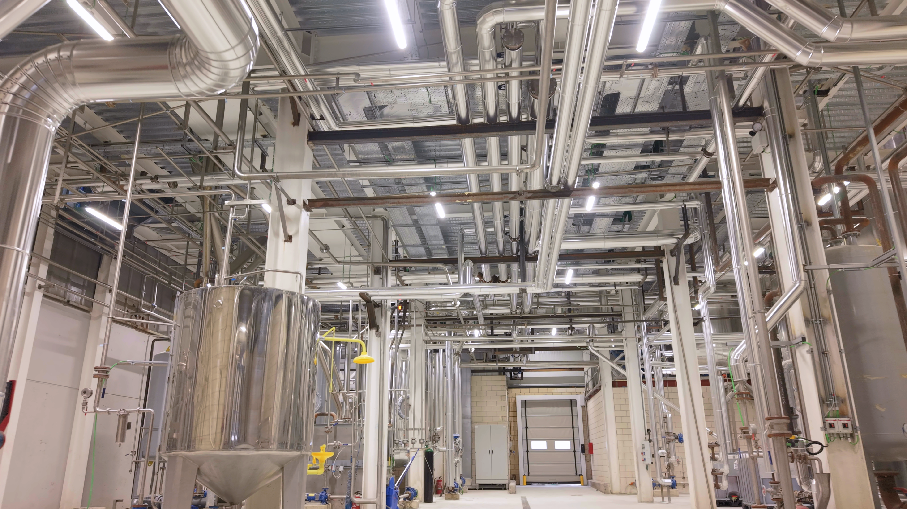
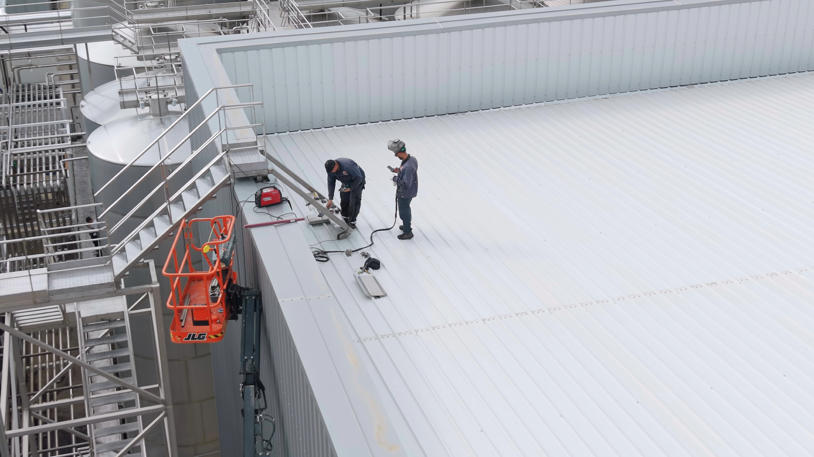

Fabrication and assembly
Tailored solutions for industrial installations and equipment.
- Pipework and boilermaking
- Metalwork and specialist welding
- Custom fabrication and assembly

Fabrication, assembly and maintenance of pipework, steel structures and industrial equipment.
Services
Tailored solutions for industrial installations and equipment.

Equipment support throughout its working life.

Work on installations and equipment during planned shutdowns or in emergencies.
Work
Industrial pipework and equipment: FC Montagens projects in photographs and video.

Assembly and maintenance
Pipe preparation, assembly and maintenance, with the FC Montagens team on site.
View work ↗

Selected images of fabrication, assembly and installations.



Company
Founded in 2018 and based in Matosinhos, FC Montagens provides industrial fabrication, assembly and maintenance services internationally.
We were established to meet industrial assembly and maintenance needs. Our team brings together professionals from different trades to work on installations and equipment.
Tell us about your project ↗To be our clients’ first choice for industrial assembly and maintenance, combining our team’s expertise with a commitment to quality. To keep growing and serve a wider range of industries and challenges.
Contact
Describe the work, location and proposed dates. To send drawings or photographs, contact us by email.